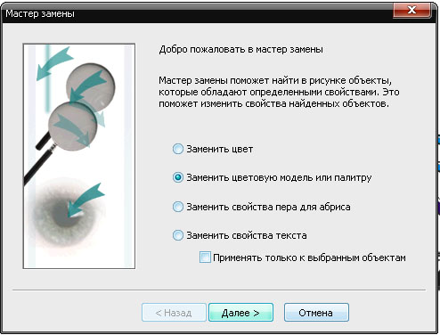
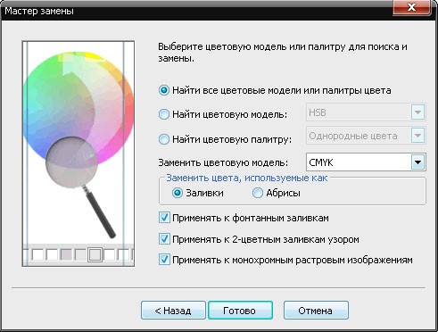

История одного логотипа
Вы молоды и энергичны?
Мечтаете быть дизайнером в полиграфии?
Хотите создавать и творить неповторимое?
Не забывайте, что наравне со своими творениями вам придётся обрабатывать творения других дизайнеров.
Не осудит меня администрация сайта за скрытую, может быть, рекламу.
P.S. До этого в форуме adidas рекламировал, вроде не ругали 8-)
Пример яркий, много что можно расказать для начинающих.
Открываем
Но это не всё, необходимо нажать F4 для отображения всех забытых объектов на полях. Бывает забывают какие-нибудь фотки, а ты думаешь:"чё ж такое? картинка маленькая, а открывалась 1,5 часа?
И это не всё!
Необходимо проверить на наличие прозрачных объектов с нулевым абрисом.
Для этого необходимо перейти в упрощённый каркас

P.S. Я, обычно, копирую объект и вставляю в новый документ с моим привычным рабочим пространством (напраляющие, абрисы и т.д.)
Смотрим свойства документа (используем правую кнопку мыши)
Здесь мы можем поверхностно оценить наличие эффектов (тени, прозрачности) и разницы в цветовых моделях (RGB, CMYK)
Привести всё к одной цветовой модели можно вручную или с помощью Замены



Котрольный просмотр Свойств документа. Цветовая модель одна!

P.S. Использование Замены бывает полезно при использовании старых клипартов или сконвертированных из eps.


Макросы это хорошо - избавляют от рутины, когда нужно проверять много, часто, и зело борзо.
Но человек сразу начав работать с макросами такого уровня, как CDRPreflight и sTools, не будет ли все так же походить на чайника, с той разницей, что у него есть 2-3 волшебные кнопки которые сделают КАК НАДО.
Суть и основы происходящего так и останутся для него "священными" и непонятыми.
Типа водительское удостоверение у меня есть, и даже два ... но водить я так толком и не умею.
Потому такие разборы весьма полезны.
Это похоже на то, как в школе учат считать в столбик. Нужно или нет? Ведь есть калькулятор и... компьютер. Мне кажется, нужно. Мало ли как сложится жизнь и умение обойтись без калькулятора пригодится.
Так и здесь. Нужно уметь анализировать документ и его объекты. И, умея это делать, пользоваться макросами :) А умение пригодится. И суть процессов, творимых макросами, будет понята лучше и на чужом компьютере, где все непривычно, можно будет что-то сделать, а не кричать "SOS"...
Добавлю в покрывшееся пылью обсуждение...
dastin, Афи, +1
Как-то я пришёл на новую работу, а там по установленным привилегиям пользователи-дизайнеры не имели права на доступ к общим каталогам типа ProgramFiles, и я не смог поставить принесённые макросы. (Потом я вручную перекинул GMS-файлы в пользовательский каталог макросов и свои установщики перекомпилировал соответственно.) Да и бывает, иногда приходится доделать что-то в макете на чужой машине, где макросами никогда и не пахло — тут-то и спасает знание сути проблем и умение устранять их вручную.
Я добавлю от себя: уверен, что вся жизнь как фраза «тыж фотограф»
-а сфотографируй на наш
а я даже не знаю где там кнопка спуска, говорю
– я не умею этим пользоваться
делают круглые глаза
-ну “тыжфотограф”
отсюда вывод 1
“тыжфотограф” снимает отлично всем что попадется под руку фот телефон или спичечный коробок
___________________
или звонит друг говорит
-слушай мне тут рекламу нужно сделать, баннер, листовки, фон заменить
отвечаю
-тебе нужен дизайнер
-ну “тыжфотограф”
-и что ?
-ну фотошопом владеешь же
вывод 2 “тыжфотограф” еще и дизайнер и креативщик и слоганосочинитель
___________________
или вот обязательно раз в месяц спрашивают
-а посоветуй какой фотоаппарат купить?
начинаю спрашивать
-а что а для чего есть хорошие зеркалки начального уровня оптику можно подобрать
-да не нам попроще что то
-ок есть хорошие без зеркалки итп..
-да не нам совсем проще мы вот в магазине были нам продавец советовал casio такой красненький 12 мегапикселей это хороший?
-хз я не разбираюсь в в мыльницах тем более их очень много разных
-ну “тыжфотограф”
вывод 3 “тыжфотограф” знает абсолютно все фотоаппараты и все их технические характеристики даже если они выпущены вчера и умеет их отличать по цвету и форме корпуса
____________________
или пишут
-у нас есть фотки профессиональные можешь обработать и книжку сделать
-надо смотреть на качество
(с гордостью) -профессиональные
-оке скинь пару фото нужно глянуть
а там караул пересветы , на улице диафрагма 11 а мыло жуткое и половина в синей тонировке , в экзиф лезу там 5 д марк 2 + кит походу.
-а без этой синевы нет?
-это уже обработанные
говорю либо чб либо синева останется
-а вот так нельзя сделать как здесь (ссылка на мою свадьбу)
-это надо было при съемке сразу делать сейчас уже поздно
-ну “тыжфотограф” обработай как свои
вывод 4 “тыжфотограф” все может потом в фотошопе нарисовать картинка боке цвета резкость это все потом делается а при съемке без разницы как и что снято
___________________
или еще едешь куда нибудь в будний день звонок
-привет
-привет
-как дела ?
-да нормально
-а ты где сейчас?
-да вот еду (бла бла бла)
- а у тебя фотика с собой нет а то мне нужно фасад и интерьер здания отщелкать может заедешь
О_о
вывод 5 конечно заеду “тыжфотограф” никогда не расстается с фотоаппаратом даже спит с ним
_____________________
а еще радуют звонки типа
-а где в фотошопе кнопочка фон поменять
или вот видик утром звонит
-я для обложки фотку одну на другую наложил а как края смягчить
и с спросонья прям по кнопкам пытаешься вспомнить что после чего нужно нажать и как еще объяснить по телефону как выглядит значек маски слоя
вывод 6 у “тыжфотографа” фотошоп в мозг загружен и на любой самый дурацкий вопрос он сможет найти ответ
_______________________
или пригласили тебя на праздник приходишь
а они
-а ты фотик не взял ?
-нет я ж отдыхать пришел
-а кто ж нас фотографировать будет?
вывод 7 “тыжфотографы” не любят отдыхать в принципе
_________________________
в контакте пишет одна барышня
-Привет)) Привет))Мне тебя посоветовал Вася Пупкин нужен фотограф, который смог бы благотворительно сделать съемку для рекламы салона меха))) реклама будет по всему городу висеть. как тебе предложение?
отвечаю
-Привет) Благотворительность — оказание бескорыстной помощи тем, кто в этом нуждается. ( из Википедии) салон меха уж никак к неимущим или нуждающимся я отнести не могу
она еще даж ответ не прочитала мой
-отбой)))) нашла))
а позже прочитав отвечает
-косяк РА, а не салона
вывод 8 “тыжфотографы” большие трудоголики готовы работать чтобы потом наслаждаться своими работами на билбордах города
... ... допустим ... Стоит придти на новую работу, не зависимо от собеседования, появится вопросы: а ты не мог бы поднести с « Сережей» мусор... И за одно там воду принесли... Позже... Так ты скажи на токарном смог бы выточить объемный крест? вытачивать не надо, просто предположи... ...вытачиваешь... А 3ds max не знаешь как текстуру наложить на объект? а как объект выдавить? слушай ну ка сядь покажи тока быстро а то работы много... Привет! - привет... покажи как в фотошопе фотку обрезать... а глаза сделай светлее... а нос можно выше? или тебе совсем в падлу?... Так у тебя есть права или нет? А в лес смог бы завести?... Ну заболел менеджер сядь пока ты без работы обзвани пару клиентов, жрать то нечего уже...
Я уверен, у многих так и есть... а для других, это всего лишь цветочки... Моё мнение - что людям надо помогать, или они перестанут помогать тебе, понятно за многое платят мало а иногда и не платят...
Страницы